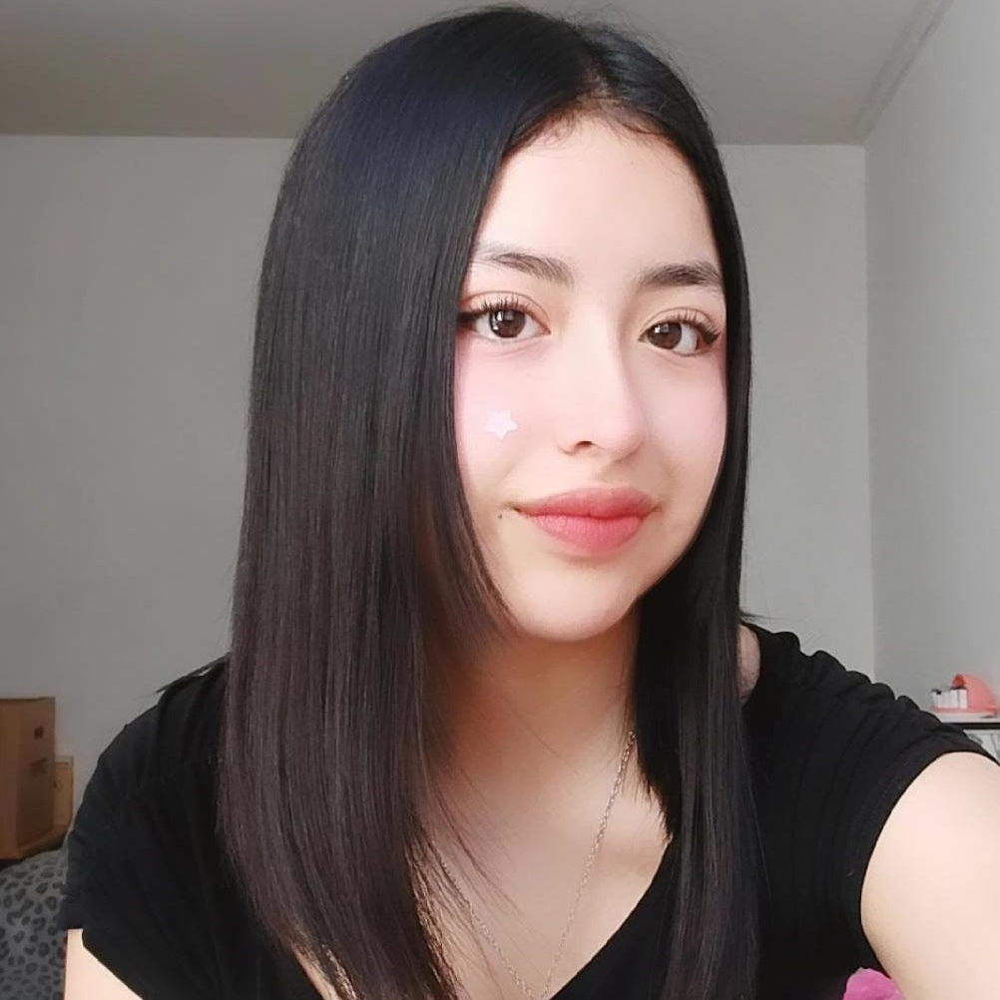
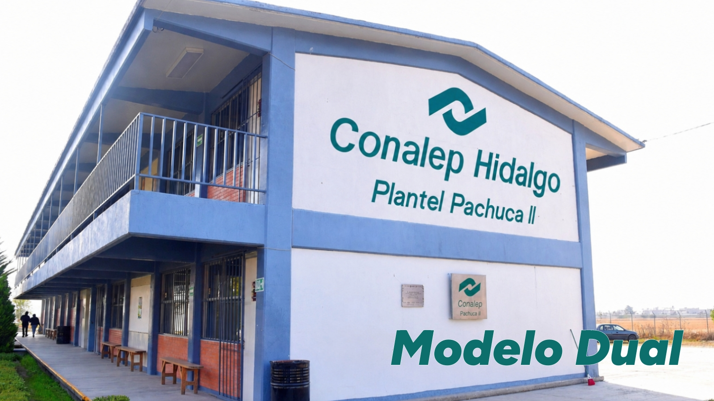
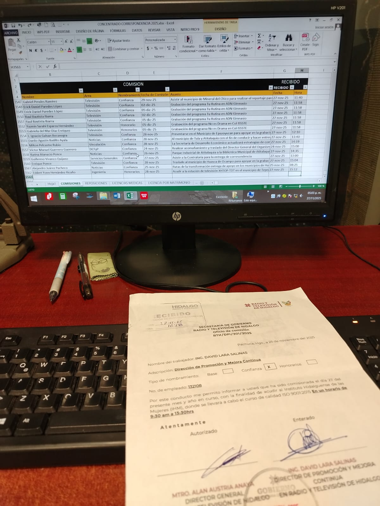
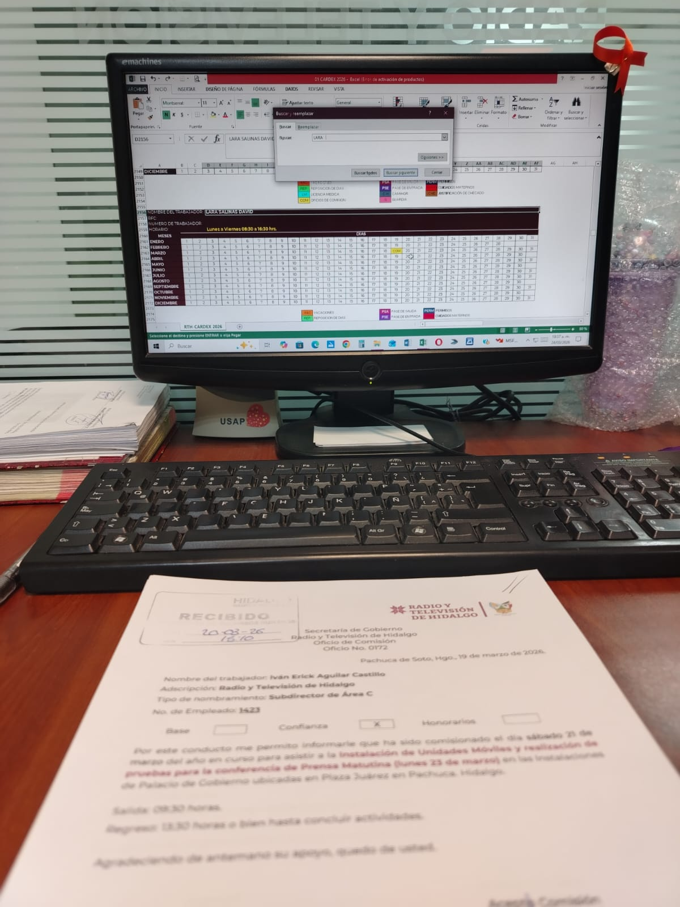
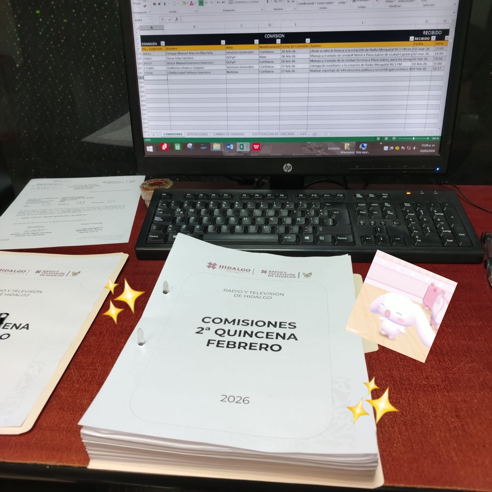
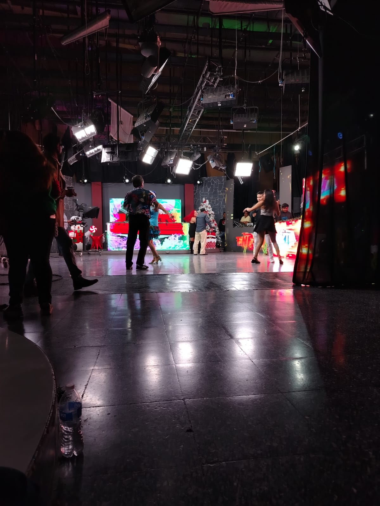
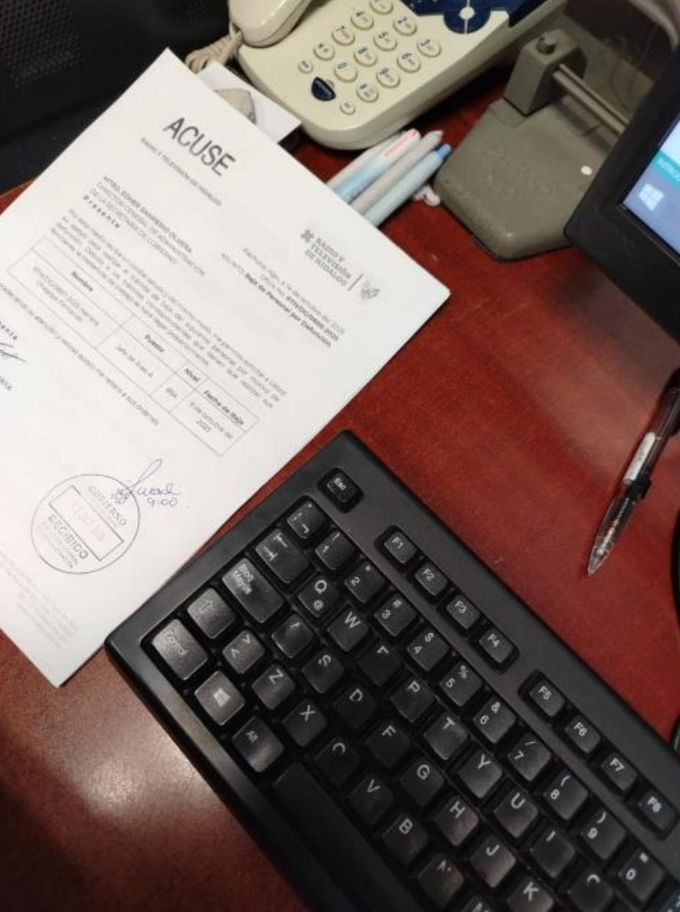
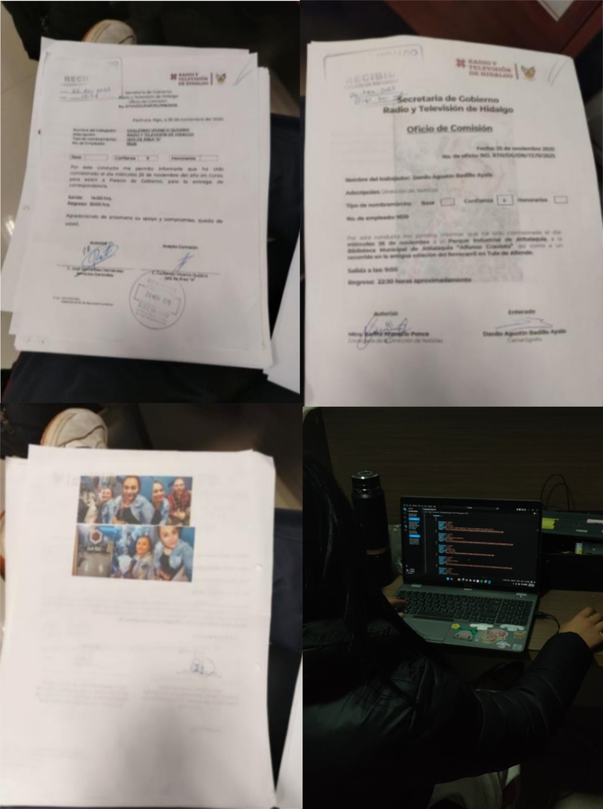
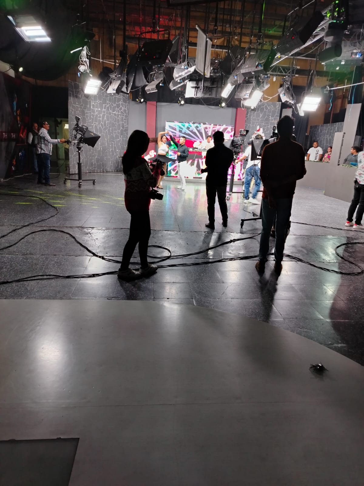

🌸 Currículum

💖💖 Mi experiencia en el Modelo Dual

Como estudiante de CONALEP Pachuca II, realicé mi Modelo Dual en Radio y Televisión de Hidalgo durante un total de 1001 horas, cumpliendo jornadas de 8 horas diarias de lunes a jueves.
Esta experiencia tuvo como propósito acercarme al entorno laboral real, permitiéndome adquirir conocimientos, experiencia práctica y aprender de profesionales que ya se desempeñan dentro de este ámbito.
📻 ¿Qué es Radio y Televisión de Hidalgo?

Radio y Televisión de Hidalgo es el sistema de medios de comunicación públicos del estado de Hidalgo, México.
Este organismo descentralizado produce y transmite contenidos educativos, culturales, sociales e informativos para la población, mediante una red de estaciones de radio y canales de televisión que contribuyen a la difusión de información y cultura en el estado.
📂 Actividades realizadas
Registro de documentos

Me encargaba de registrar en una base de datos todos los oficios que llegaban al área de Recursos Humanos, tales como oficios de comisión, cambios de horario, reposiciones, constancias ISSSTE, documentos enviados y recibidos.
Digitalización y segundo registro

Se seleccionaban los oficios que justificaban entradas o salidas del personal para registrarlos de manera individual. Posteriormente se digitalizaban y almacenaban en carpetas digitales organizadas según el tipo de documento.
Registro de incidencias

Registraba incidencias relacionadas con comisiones, cambios de horario, reposiciones y constancias ISSSTE. Esta información era organizada de forma quincenal para ser enviada a las áreas correspondientes de gobierno.
🤝 ¿Cómo apoyaba al área?
Durante mi estancia colaboré en la organización, clasificación y archivo de documentación.
También apoyé en la entrega de documentos y carpetas a distintas áreas, el registro de información, revisión de textos y captura de datos.
Asimismo, participé en la distribución de circulares internas, llevándolas a las áreas correspondientes y apoyando en diversas tareas solicitadas por el personal.
🌟 ¿Qué aprendí?
Durante mi experiencia adquirí conocimientos relacionados con la gestión documental, digitalización y registro de información en bases de datos.
También conocí diversos procesos y situaciones que pueden presentarse dentro del área de Recursos Humanos.
Aprendí la importancia de seguir instrucciones, adaptarme a distintos métodos de trabajo y realizar cada actividad con responsabilidad, compromiso y disposición para mejorar.
✨ Habilidades desarrolladas
🎀 Dato curioso
¡Haz clic para descubrir algo sobre mi experiencia! 👇
📸 Galería




💖 Conclusión
Esta experiencia en el Modelo Dual representó una oportunidad invaluable para complementar mi formación académica con experiencias reales dentro del ámbito laboral.
Gracias a Radio y Televisión de Hidalgo pude conocer de cerca el funcionamiento de una institución pública, desarrollar nuevas habilidades y fortalecer mi preparación profesional.
Como estudiante, recomiendo ampliamente el Modelo Dual, ya que permite aplicar los conocimientos adquiridos en la escuela dentro de un entorno laboral real.
De manera especial, recomiendo realizar esta experiencia en Radio y Televisión de Hidalgo, ya que es una institución que recibe a los estudiantes con disposición, respeto y apoyo. Tanto mis compañeros como yo nos sentimos satisfechos con el aprendizaje obtenido y agradecidos por la oportunidad brindada. 🌸
✨ Diana Laura Delgadillo Benítez ✨
💫 Un pequeño extra para ti
Gracias por llegar hasta aquí 🌸 ¡Toca las estrellitas y descubre un mensaje! ✨
🌸 Hecha con mucho esfuerzo y cariño 💖